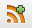
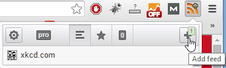
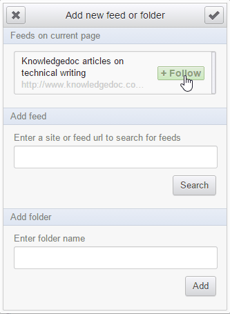
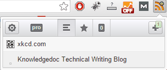

Introduction to RSS feeds31/03/15

For years I’ve seen the acronym RSS around, or the bright orange symbol but it wasn’t until I started managing the Knowledgedoc blog that I actually investigated what these things were. It turns out that an RSS feed is a really great tool for following a blog. In this article I’ll introduce you to RSS feeds and how to follow all your favourite organisations.
RSS (Rich Site Summary, sometimes referred to as Really Simple Syndication) is a format for delivering information that is frequently being updated, most commonly used for blogs and news sites. Instead of having to check all the websites you like reading to see if they’ve posted a new update, you can receive individual notifications for each update or have all the updates displayed in one place. All you need to do is download a feed reader or feed aggregator and subscribe to all your favourite websites.
There’s a plethora of free software out there that you can follow RSS feeds with. I use the Google Chrome extension RSS Feed Reader. There are Windows and Mac applications, phone applications, web applications; every conceivable platform has a RSS reader.
Once you’ve downloaded a suitable feed reader go out there and subscribe to your favourite blogs and news sites! The Chrome extension RSS Feed Reader notifies me with a green plus symbol  every time I’m on a webpage with a RSS feed available.
For example, to subscribe to the Knowledgedoc blog:
- Navigate to Knowledgedoc blog home page.
- Click
-
Click the Add Feed button.
 -
Click the Follow button.

The Knowledgedoc blog has now been added to your RSS feeds.

Hope you have fun subscribing to lots of blogs! Next month I’ll walk you through creating and maintaining your own RSS feed.